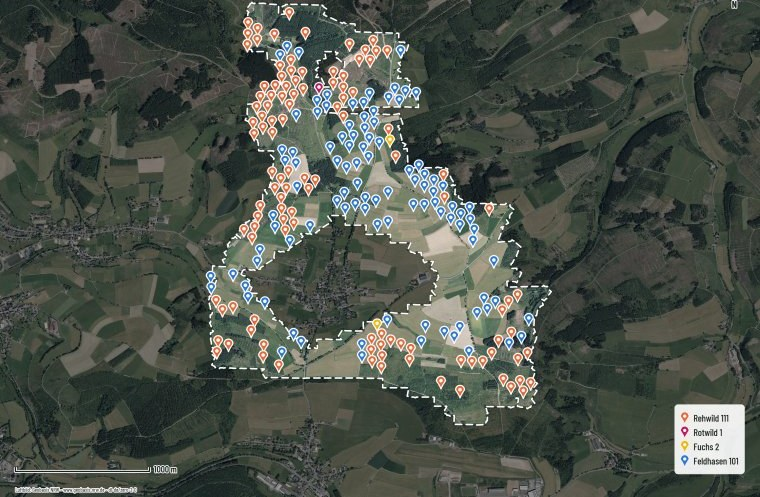
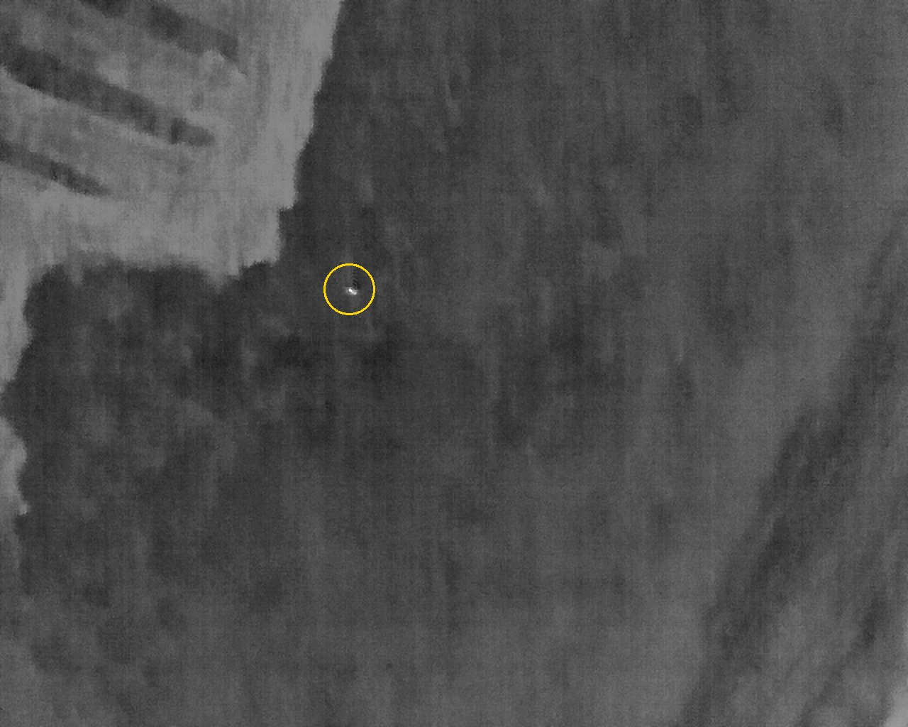
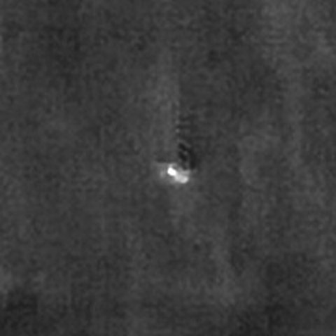

Zählkarte
Jedes gezählte Stück als Punkt auf dem Luftbild, nach Wildart getrennt. Dazu eine Dichtekarte, die zeigt, wo sich Ihr Wild sammelt.
Revierscan befliegt Ihr Revier abends mit einer Wärmebild-Drohne und zählt das Wild Bild für Bild. Sie erhalten eine Karte mit jedem gezählten Stück – eine belegte Mindestanzahl statt Bauchgefühl.
Winter 2026/27: kostenlos bis 31. März 2027
Schwerpunkt sind Rehwild und Feldhasen. Alles andere Wild, das im Bild auftaucht, wird mitgezählt.
Jedes gezählte Stück als Punkt auf dem Luftbild, nach Wildart getrennt. Dazu eine Dichtekarte, die zeigt, wo sich Ihr Wild sammelt.
Zwei Seiten PDF: Anzahl je Wildart, beflogene Fläche, Datum und Uhrzeit des Flugs – zum Abheften oder für die Hegegemeinschaft.
Alle Positionen als Datei für Revier-Apps, Google Earth oder GPS-Geräte – so finden Sie die Einstände im Gelände wieder.
Gezählt wird nur, was im Wärmebild eindeutig bestätigt ist. Nichts wird hochgerechnet – Sie bekommen eine Mindestanzahl, keine geschätzte Bestandszahl.
Bei einer Zählung entstehen Tausende Wärmebilder. Eine eigens dafür trainierte KI markiert jede verdächtige Stelle. Gezählt wird aber nur, was im Bild von Hand bestätigt wurde – warme Misthaufen, Steine oder Baumstümpfe fallen so heraus.
Jedes Bild bleibt dabei im Zusammenhang mit seinen Nachbarbildern. Damit wird dasselbe Stück nicht doppelt gezählt.


VergrößertSie nennen Ort und ungefähre Größe des Reviers. Die Reviergrenze zeichnen Sie einfach in eine Karte ein – auf Papier, als Foto oder online – und schicken sie zu.
Im Herbst und Winter, wenn das Laub gefallen ist, abends nach Sonnenuntergang. Die Drohne fliegt eine vorab geplante Route über die ganze Fläche.
Jedes Wärmebild wird durchgesehen: Die KI schlägt Stellen vor, bestätigt wird von Hand. Eine zufällige Stichprobe dient zusätzlich als Kontrolle.
Innerhalb einer Woche erhalten Sie Zählkarte, Flugbericht und die Positionen für Ihre Revier-App per E-Mail.
Wild unter dichten Fichten oder hinter Hindernissen ist im Wärmebild nicht immer zu sehen. Gezählt wird nur, was eindeutig bestätigt ist. Der tatsächliche Bestand liegt also mindestens bei dieser Zahl – eher darüber. Je höher der Waldanteil, desto größer kann der Abstand sein.
Der Schwerpunkt liegt auf Rehwild und Feldhasen. Rotwild, Schwarzwild und Füchse werden mitgezählt, wenn sie im Bild sind. Für eine verlässliche Rot- oder Schwarzwildzählung sind die Einstandsgebiete dieser Arten aber meist deutlich größer als eine beflogene Revierfläche.
Im Herbst und Winter, sobald das Laub weitgehend gefallen ist, abends nach Sonnenuntergang. Dann hat sich der Boden abgekühlt und warmes Wild hebt sich deutlich ab. Bei starkem Wind oder Regen wird der Termin verschoben.
Vom kleinen Feldrevier bis zu großen Flächen. Im Beispielrevier waren rund 340 ha an einem Abend möglich; größere Reviere werden auf mehrere Abende verteilt.
Die Bilder bleiben bei Revierscan und werden auf einem eigenen Rechner ausgewertet, nicht in einer Cloud. Rohbilder werden nicht herausgegeben und nicht an Dritte weitergegeben. Mit Ihrem Einverständnis werden sie genutzt, um die Auswertung weiter zu verbessern – das ist der Grund, warum die Zählung im Winter 2026/27 kostenlos ist.
Nein. Wichtig ist nur, dass Termin und Reviergrenze vorher abgestimmt sind. Wer möchte, kann gern zuschauen.
Bis zum 31. März 2027 zählt Revierscan ohne Kosten für Sie. Im Gegenzug dürfen die Wärmebilder genutzt werden, um die Auswertung zu verbessern. Die Zahl der Termine ist begrenzt.
Schreiben Sie kurz, wo Ihr Revier liegt und wie groß die Fläche ungefähr ist. Sie bekommen eine Rückmeldung mit möglichen Terminen.